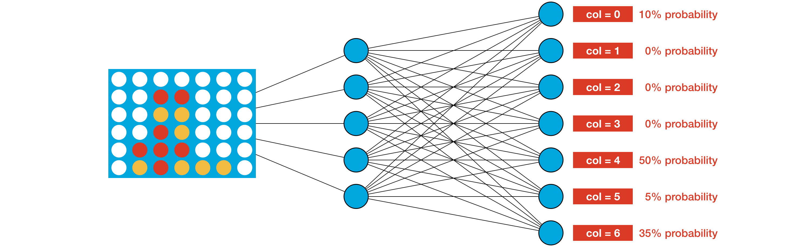

Overview
Connect Four is a game where two players alternate turns dropping colored discs into a vertical grid. Each player uses a different color (usually red or yellow), and the objective of the game is to be the first player to get four discs in a row. In this blog I'll walk through my solutions for creating agents to beat average and adavnced players with traditional AI methods. I will also build an agent using reinforcement learning which will imporve overtime with more practice, much like a human would playing this game.
Setup
Kaggle provides a gaming environment to work in and now it only needs some sort of agent to place the game pieces. This could be done by creating an agent yourself or have a human click on the row where it wants pieces placed. To start, its a good idea to really understand how this simple game works and how you can write code to select which row is the best to place a game piece.
In order to win Connect 4, a player must have 4 game pieces in a row. To start making a smart agent to win the game, I worte a function that scanned the board for vaild moves that would give 4 in a row, otherwise the agent would randomly place the game piece. This is the first step to creating a smart agent. Below is a small snip of the function used to check winning move. My full code can be found on my Github page.
# Returns True if dropping piece in column results in game win
def check_winning_move(obs, config, col, piece):
# Convert the board to a 2D grid
grid = np.asarray(obs.board).reshape(config.rows, config.columns)
next_grid = drop_piece(grid, col, piece, config)
# horizontal
for row in range(config.rows):
for col in range(config.columns-(config.inarow-1)):
window = list(next_grid[row,col:col+config.inarow])
if window.count(piece) == config.inarow:
return True
# vertical
for row in range(config.rows-(config.inarow-1)):
for col in range(config.columns):
window = list(next_grid[row:row+config.inarow,col])
if window.count(piece) == config.inarow:
return True
# positive diagonal
for row in range(config.rows-(config.inarow-1)):
for col in range(config.columns-(config.inarow-1)):
window = list(next_grid[range(row, row+config.inarow), range(col, col+config.inarow)])
if window.count(piece) == config.inarow:
return True
# negative diagonal
for row in range(config.inarow-1, config.rows):
for col in range(config.columns-(config.inarow-1)):
window = list(next_grid[range(row, row-config.inarow, -1), range(col, col+config.inarow)])
if window.count(piece) == config.inarow:
return True
return False
Placing a winning piece does not always mean you will win everytime. Blocking the other player from a winning move is just as important. The code for this function is very similar to the previous code of checking for a winning move. So now there is a function for placing a winning piece and blocking an opponent from winning move, otherwise the piece is placed randomly. However, a descent Connect 4 player will still win the majority of the time against this agent. Good players are always thinking ahead.
One-Step Lookahead
In order to look ahead you have to make the agent act like a human. The agent must anticipate the opponents move and make a decision and weigh it against the alternative moves it could make. Starting from a blank board there are over 4 trillion diffent possible boards that could be played. This would take a lot of computing power to accomplish to make the perfect move everytime, so lets focus on just the next move. The technique I used is called a Heuristic or Heuristic Function. The heuristic assigns scores to different game boards, where we estimate that boards with higher scores are more likely to result in the agent winning the game.
For instance, one heuristic that might work reasonably well for Connect Four looks at each group of four adjacent locations in a (horizontal, vertical, or diagonal) line and assigns:
- 1000000 (1e6) points if the agent has four discs in a row (the agent won),
- 1 point if the agent filled three spots, and the remaining spot is empty (the agent wins if it fills in the empty spot), and
- -100 points if the opponent filled three spots, and the remaining spot is empty (the opponent wins by filling in the empty spot).
And how exactly will the agent use the heuristic? Consider it's the agent's turn, and it's trying to plan a move for the game board shown at the top of the figure below. There are seven possible moves (one for each column). For each move, we record the resulting game board.
Then we use the heuristic to assign a score to each board. To do this, we search the grid and look for all occurrences of the pattern in the heuristic, similar to a word search puzzle. Each occurrence modifies the score. For instance,
- The first board (where the agent plays in column 0) gets a score of 2. This is because the board contains two distinct patterns that each add one point to the score (where both are circled in the image above).
- The second board is assigned a score of 1.
- The third board (where the agent plays in column 2) gets a score of 0. This is because none of the patterns from the heuristic appear in the board.
This method can expanded to look at more possibilities to choose from. The image below is taking into account other board possibilities.
N-Step Lookahead
This agent performs reasonably well, but definitely still has room for improvement! For instance, consider the potential moves in the figure below. (Note that we use zero-based numbering for the columns, so the leftmost column corresponds to col=0, the next column corresponds to col=1, and so on.)
With one-step lookahead, the red player picks one of column 5 or 6, each with 50% probability. But, column 5 is clearly a bad move, as it lets the opponent win the game in only one more turn. Unfortunately, the agent doesn't know this, because it can only look one move into the future.
Using the MiniMax Algorithm the agent can get a better look into the future. We'd like to leverage information from deeper in the game tree. For now, assume we work with a depth of 3. This way, when deciding its move, the agent considers all possible game boards that can result from
- the agent's move,
- the opponent's move, and
- the agent's next move.
We have labeled each of the "leaf nodes" at the bottom of the tree with the score from the heuristic. (We use made-up scores in the figure. In the code, we'll use the same heuristic from the previous code.) As before, the current game board is at the top of the figure, and the agent's goal is to end up with a score that's as high as possible. But notice that the agent no longer has complete control over its score -- after the agent makes its move, the opponent selects its own move. And, the opponent's selection can prove disastrous for the agent! In particular,
- If the agent chooses the left branch, the opponent can force a score of -1.
- If the agent chooses the right branch, the opponent can force a score of +10.
With this in mind, you might argue that the right branch is the better choice for the agent, since it is the less risky option. Sure, it gives up the possibility of getting the large score (+40) that can only be accessed on the left branch, but it also guarantees that the agent gets at least +10 points. This is the main idea behind the minimax algorithm: the agent chooses moves to get a score that is as high as possible, and it assumes the opponent will counteract this by choosing moves to force the score to be as low as possible. That is, the agent and opponent have opposing goals, and we assume the opponent plays optimally. So, in practice, how does the agent use this assumption to select a move? We illustrate the agent's thought process in the figure below.

Deep Reinforcement Learning
So far, the agents have relied on detailed information about how to play the game. The heuristic really provides a lot of guidance about how to select moves! The next agent I will build is one using reinforcement learning. Improving the heuristic would take a long time and be very tedious when to assign weights to all possible moves. It be much easier if we had a more systematic way of improving the agent with gameplay experience. The best way to do this is to replace the heuristic with a neural network. The network accepts the current board as input. And, it outputs a probability for each possible move.
Then, the agent selects a move by sampling from these probabilities. For instance, for the game board in the image above, the agent selects column 4 with 50% probability. This way, to encode a good gameplay strategy, we need only amend the weights of the network so that for every possible game board, it assigns higher probabilities to better moves. At least in theory, that's our goal. In practice, we won't actually check if that's the case -- since remember that Connect Four has over 4 trillion possible game boards!
In order to have this model learn and improve, the weights need to be adjusted for good moves and bad moves. There are many different reinforcement learning algorithms, such as DQN, A2C, and PPO, among others. All of these algorithms use a similar process to produce an agent:
- Initially, the weights are set to random values.
- As the agent plays the game, the algorithm continually tries out new values for the weights, to see how the cumulative reward is affected, on average. Over time, after playing many games, we get a good idea of how the weights affect cumulative reward, and the algorithm settles towards weights that performed better.
- This way, we'll end up with an agent that tries to win the game (so it gets the final reward of +1, and avoids the -1 and -10) and tries to make the game last as long as possible (so that it collects the 1/42 bonus as many times as it can).
- You might argue that it doesn't really make sense to want the game to last as long as possible -- this might result in a very inefficient agent that doesn't play obvious winning moves early in gameplay. And, your intuition would be correct -- this will make the agent take longer to play a winning move! The reason we include the 1/42 bonus is to help the algorithms we'll use to converge better. Further discussion is outside of the scope of this course, but you can learn more by reading about the "temporal credit assignment problem" and "reward shaping".
All of the code can be found on my Github page but I won't show all of the code in this blog. I will show how the model improves overtime by plotting the results after every interation.
Data and Info Source by Kaggle Game AI and Reinfocement Learning.